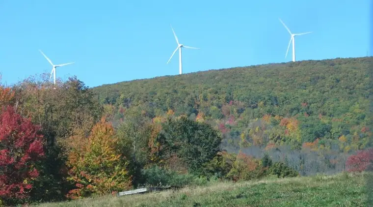
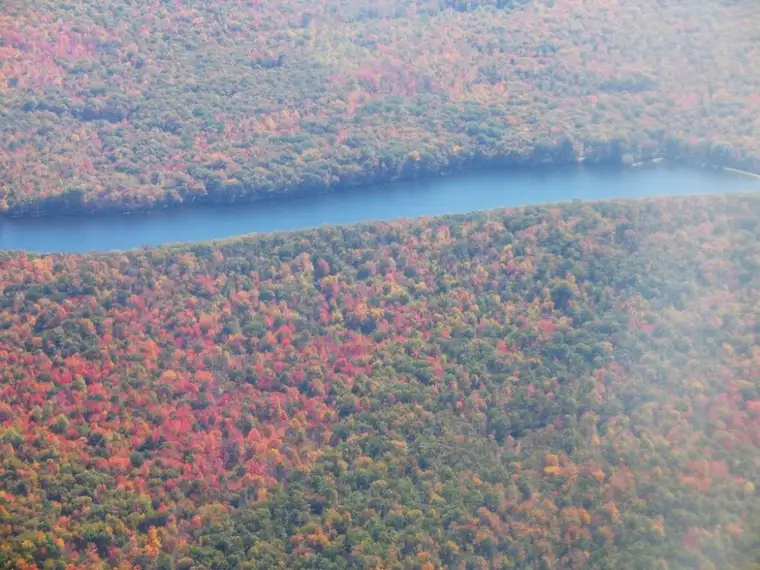
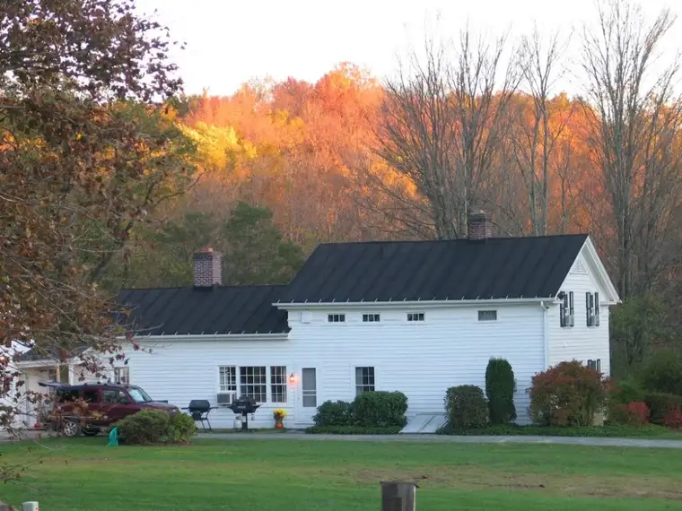
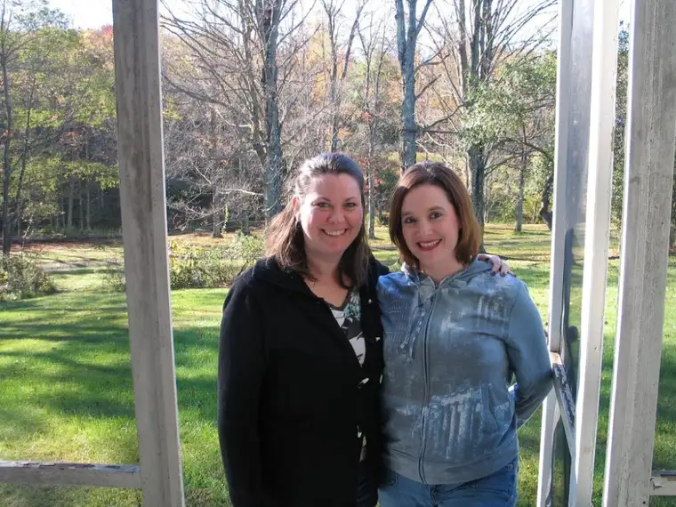
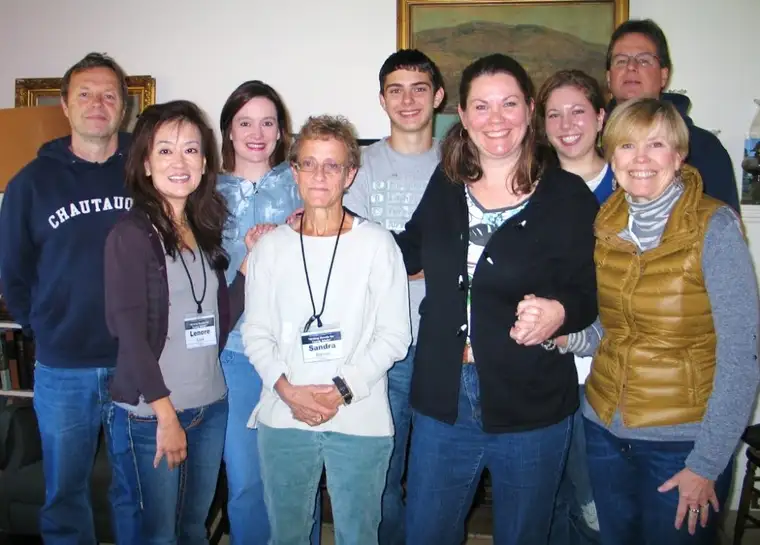

Yesterday morning, I had to say goodbye to Pennsylvania.
I caught this shot of the windmills on the way out of Honesdale:

{kind=link}

{kind=link}
Aside from sleeping in our cabins, we spent most of our time at the home site of Highlights for Children magazine founders, Garry and Caroline Myers.

It was an intense but transforming weekend made even better by what felt like perfect fall weather in the Pocono Mountains and an amazing array of food, which was beautifully prepared by a trained chef and offered to our hungry writer bodies on a regular basis throughout our stay.
{kind=link}
I will be dreaming about and processing my most recent visit to the Poconos for a very long time, both with my traveling partner and sweet writing buddy Mary…

{kind=link}

Ahhhh….
{kind=link}
But today, back to reality. Mary and I traveled all day yesterday, going from Wilkes-Barre to Detroit to Minneapolis together before parting to head to our respective cities. I got in about 8:30 last night, and before I’d even set my suitcase down, it was plain I’d arrived home.
“Mom, can you wash some clothes for me?” my 15-year-old said. Forget about a, “Hey, glad you’re home,” or anything of the sort. “Actually, my clothes are getting too small. Can you buy me some new clothes? Like, soon?”
Uh…can I put this suitcase down?
This morning, I woke to the screams of my 5-year-old in the hallway outside our bedroom. “I don’t know where my shoes are!! I’m not gonna find my shoes!!!”
A few moments later (I’m still in bed at this point), my 7-year-old comes into my room. “Here, you need to sign this,” he said, thrusting a sheet at me. In my groggy state, it was hard figuring out what I was supposed to be signing, then I realized I was agreeing to the fact that I’d heard him read a story out loud (which I hadn’t) and that we’d read together some questions at the end (which we hadn’t). He told me quickly about the story and the answers. Check. Sign.
“Moooooooooooooooooooooom! Your printer isn’t working and I need this printed out for homework today. I need your help!!!!!!!!!!!!!!!!!!!” It was my 13-year-old, panicked, in tears and yelling from my office.
How easy it would have been to just lose it at this point, but I didn’t. I just kept thinking about those golden leaves falling gently from the deciduous trees outside my cabin windows in Honesdale, about the homemade pumpkin pie I’d consumed the night before, and how it felt to sit in the office of the founder of a magazine I’ve admired since girlhood and flesh out my own story, sun streaming in from the south, blue jays flitting around on a nearby tree, cocoa-covered almonds and fresh lemonade sitting out in the covered porch in case we needed a snack.
“Here, you just go get ready. I’ll take care of the printer,” I said to my daughter.
“You know where my basketball jersey is?” my 10-year-old asked as I waited for my computer to reboot.
“No, I can’t say that I do. Sorry,” I said.
One by one, everyone rolled into the van, the youngest one with shoes, thankfully, but without a backpack, which he couldn’t find in time. His nap-time towel is in there so guess he’ll have to rest on his arms today or something.
“Have a good day,” I said, blessing each of them on the forehead. “See you after school. Love you.”
Remarkably, despite a late start, everyone got to school on time, and I drove away…in silence, with so much on my mind.
It’s a busy, full life, and not always easy to move through even the ordinary, but it’s going to be hard to ruffle me anytime soon. I’ve been filled up to the brim, renewed, and I’m ready to give a little of the loveliness I’ve just taken into myself back to others.
And whenever I feel tempted to lose it in the coming days, weeks and months, I’m just going to go to my new happy place — a place called Boyds Mills.
Q4U: We all need a happy place, a place where we can go in our minds when things get stressful; a place where we can be restored, at least temporarily. Where is your happy place?